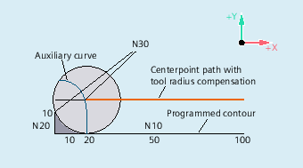
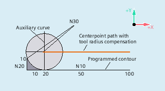

G461
If no intersection is possible between the last TRC block and a preceding block, the offset curve of this block is extended with a circle whose center point lies at the end point of the uncorrected block and whose radius is equal to the tool radius.
The control attempts to cut this circle with one of the preceding blocks.
Retraction behavior with G461
Collision monitoring CDON, CDOF
If CDOF is active (see section Collision monitoring, CDON, CDOF), the search is aborted when an intersection is found, i.e., the system does not check whether further intersections with previous blocks exist.
If CDON is active, the search continues for further intersections after the first intersection is found.
An intersection point, which is found in this way, is the new end point of a preceding block and the start point of the deactivation block. The inserted circle is used exclusively to calculate the intersection and does not produce a traversing movement.
| Note |
If no intersection is found, alarm 10751 (collision danger) is output. |
G462
If no intersection is possible between the last TRC block and a preceding block, a straight line is inserted, on retraction with G462 (initial setting), at the end point of the last block with tool radius compensation (the block is extended by its end tangent).
The search for the intersection is then identical to the procedure for G461.
Retraction behavior with G462 (see example)
With G462, the corner generated by N10 and N20 in the example program is not machined to the full extent actually possible with the tool used. However, this behavior may be necessary if the part contour (as distinct from the programmed contour), to the left of N20 in the example, is not permitted to be violated even with y values greater than 10 mm.
Corner behavior with KONT
If KONT is active (travel round contour at start or end point), the behavior differs according to whether the end point is in front of or behind the contour.
End point in front of contour
If the end point is in front of the contour, the retraction behavior is the same as with NORM. This property does not change even if the last contour block for G451 is extended with a straight line or a circle. Additional circumnavigation strategies to avoid a contour violation in the vicinity of the contour end point are therefore not required.
End point behind contour
If the end point is behind the contour, a circle or straight line is always inserted depending on G450/G451. In this case, G460-462 has no effect. If the last traversing block in this situation has no intersection with a preceding block, an intersection with the inserted contour element or with the straight line of the end point of the bypass circle to the programmed endpoint can result.
If the inserted contour element is a circle (G450), and this forms an interface with the preceding block, this is equal to the interface that would occur with NORM and G461. In general, however, a remaining section of the circle still has to be traversed. For the linear part of the retraction block, no further calculation of intersection is required.
In the second case, if no interface of the inserted contour element with the preceding blocks is found, the intersection between the retraction straight line and a preceding block is traversed.
Therefore, a behavior that deviates from G460 can only occur with active G461 or G462 either if NORM is active or the behavior with KONT is geometrically identical to that with NORM.